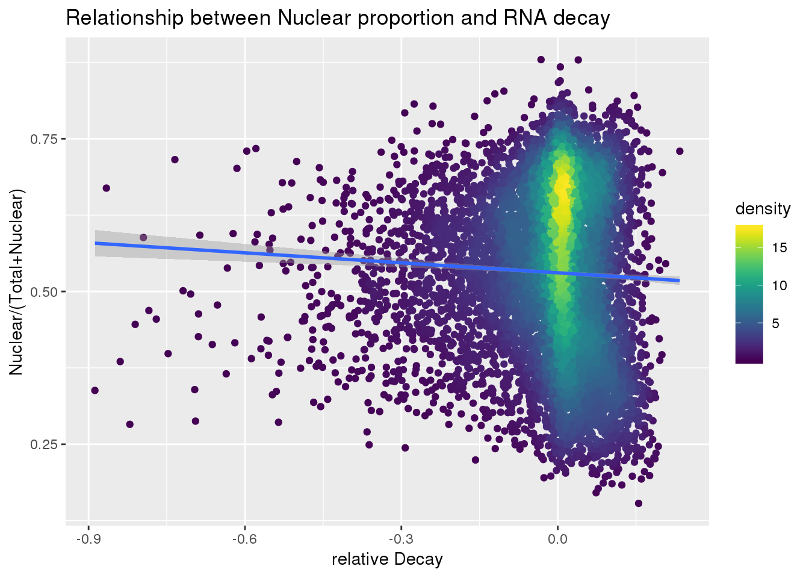

Nuclear fraction and nascent transcription
Briana Mittleman
5/15/2019
Last updated: 2019-09-09
Checks: 6 1
Knit directory: apaQTL/analysis/
This reproducible R Markdown analysis was created with workflowr (version 1.4.0). The Checks tab describes the reproducibility checks that were applied when the results were created. The Past versions tab lists the development history.
Great! Since the R Markdown file has been committed to the Git repository, you know the exact version of the code that produced these results.
The global environment had objects present when the code in the R Markdown file was run. These objects can affect the analysis in your R Markdown file in unknown ways. For reproduciblity it’s best to always run the code in an empty environment. Use wflow_publish or wflow_build to ensure that the code is always run in an empty environment.
The following objects were defined in the global environment when these results were created:
| Name | Class | Size |
|---|---|---|
| data | environment | 56 bytes |
| env | environment | 56 bytes |
The command set.seed(20190411) was run prior to running the code in the R Markdown file. Setting a seed ensures that any results that rely on randomness, e.g. subsampling or permutations, are reproducible.
Great job! Recording the operating system, R version, and package versions is critical for reproducibility.
Nice! There were no cached chunks for this analysis, so you can be confident that you successfully produced the results during this run.
Great job! Using relative paths to the files within your workflowr project makes it easier to run your code on other machines.
Great! You are using Git for version control. Tracking code development and connecting the code version to the results is critical for reproducibility. The version displayed above was the version of the Git repository at the time these results were generated.
Note that you need to be careful to ensure that all relevant files for the analysis have been committed to Git prior to generating the results (you can use wflow_publish or wflow_git_commit). workflowr only checks the R Markdown file, but you know if there are other scripts or data files that it depends on. Below is the status of the Git repository when the results were generated:
Ignored files:
Ignored: .DS_Store
Ignored: .Rhistory
Ignored: .Rproj.user/
Ignored: data/.DS_Store
Ignored: docs/.DS_Store
Ignored: docs/figure/.DS_Store
Ignored: output/.DS_Store
Untracked files:
Untracked: .Rprofile
Untracked: ._.DS_Store
Untracked: .gitignore
Untracked: @
Untracked: _workflowr.yml
Untracked: analysis/._PASdescriptiveplots.Rmd
Untracked: analysis/._cuttoffPercUsage.Rmd
Untracked: analysis/APApeak_Phenotype_GeneLocAnno.Nuclear.5perc.fc.gz.qqnorm.allChrom
Untracked: analysis/APApeak_Phenotype_GeneLocAnno.Total.5perc.fc.gz.qqnorm.allChrom
Untracked: analysis/QTLexampleplots.Rmd
Untracked: analysis/cuttoffPercUsage.Rmd
Untracked: analysis/eQTLoverlap.Rmd
Untracked: analysis/interpret verify bam.Rmd
Untracked: analysis/interpret_verifybam.Rmd
Untracked: analysis/mergeRNA.Rmd
Untracked: analysis/oldstuffNotNeeded.Rmd
Untracked: analysis/remove_badlines.Rmd
Untracked: analysis/totSpecIncludenotTested.Rmd
Untracked: analysis/totalspec.Rmd
Untracked: apaQTL.Rproj
Untracked: code/.NascentRNAdtPlotFirstintronicPAS.sh.swp
Untracked: code/._ApaQTL_nominalNonnorm.sh
Untracked: code/._BothFracDTPlotGeneRegions.sh
Untracked: code/._BothFracDTPlotGeneRegions_normalized.sh
Untracked: code/._EandPqtl_perm.sh
Untracked: code/._EandPqtls.sh
Untracked: code/._FC_NucintornUpandDown.sh
Untracked: code/._FC_UTR.sh
Untracked: code/._FC_intornUpandDownsteamPAS.sh
Untracked: code/._FC_nascentseq.sh
Untracked: code/._FC_newPeaks_olddata.sh
Untracked: code/._HMMpermuteTotal.py
Untracked: code/._HmmPermute.py
Untracked: code/._IntronicPASDT.sh
Untracked: code/._LC_samplegroups.py
Untracked: code/._LD_qtl.sh
Untracked: code/._LD_snpsproxy.sh
Untracked: code/._NascentRNAdtPlot.sh
Untracked: code/._NascentRNAdtPlot3UTRPAS.sh
Untracked: code/._NascentRNAdtPlotExcludeFirstintronicPAS.sh
Untracked: code/._NascentRNAdtPlotNucPAS.sh
Untracked: code/._NascentRNAdtPlotTotPAS.sh
Untracked: code/._NascentRNAdtPlotintronicPAS.sh
Untracked: code/._NascnetRNAdtPlotPAS.sh
Untracked: code/._NetSeq_fourthintronDT.sh
Untracked: code/._NomResfromPASSNP.py
Untracked: code/._NuclearPAS_5per.bed.py
Untracked: code/._PTTfacetboxplots.R
Untracked: code/._PrematureQTLNominal.sh
Untracked: code/._PrematureQTLPermuted.sh
Untracked: code/._QTL2bed.py
Untracked: code/._QTL2bed_withstrand.py
Untracked: code/._RNAbam2bw.sh
Untracked: code/._RNAseqDTplot.sh
Untracked: code/._RunRes2PAS.sh
Untracked: code/._SAF215upbed.py
Untracked: code/._SnakefilePAS
Untracked: code/._SnakefilefiltPAS
Untracked: code/._TESplots100bp.sh
Untracked: code/._TESplots150bp.sh
Untracked: code/._TESplots200bp.sh
Untracked: code/._TotalPAS_5perc.bed.py
Untracked: code/._Untitled
Untracked: code/._ZipandTabPheno.sh
Untracked: code/._aAPAqtl_nominal39ind.sh
Untracked: code/._allNucSpecQTLine.py
Untracked: code/._allNucSpecfromNonNorm.py
Untracked: code/._annotatePacBioPASregion.sh
Untracked: code/._annotatedPAS2bed.py
Untracked: code/._apaInPandE.py
Untracked: code/._apaQTLCorrectPvalMakeQQ.R
Untracked: code/._apaQTLCorrectpval_6or7a.R
Untracked: code/._apaQTL_Nominal.sh
Untracked: code/._apaQTL_nominalv67.sh
Untracked: code/._apaQTL_permuted.sh
Untracked: code/._apaQTL_permuted_test6A7A.sh
Untracked: code/._apainRibo.py
Untracked: code/._assignNucIntonpeak2intronlocs.sh
Untracked: code/._assignTotIntronpeak2intronlocs.sh
Untracked: code/._bam2BW_5primemost.sh
Untracked: code/._bed2saf.py
Untracked: code/._bothFracDTplot1stintron.sh
Untracked: code/._bothFracDTplot4thintron.sh
Untracked: code/._bothFrac_FC.sh
Untracked: code/._callPeaksYL.py
Untracked: code/._changeRibonomQTLres2genename.py
Untracked: code/._changenomQTLres2geneName.py
Untracked: code/._chooseAnno2PAS_pacbio.py
Untracked: code/._chooseAnno2SAF.py
Untracked: code/._chooseSignalSite
Untracked: code/._chooseSignalSite.py
Untracked: code/._closestannotated.sh
Untracked: code/._closestannotated_byfrac.sh
Untracked: code/._cluster.json
Untracked: code/._clusterPAS.json
Untracked: code/._clusterfiltPAS.json
Untracked: code/._codingdms2bed.py
Untracked: code/._config.yaml
Untracked: code/._config2.yaml
Untracked: code/._configOLD.yaml
Untracked: code/._convertNominal2SNPLOC.py
Untracked: code/._convertNominal2SNPloc2Versions.py
Untracked: code/._convertNumeric.py
Untracked: code/._correctNomeqtl.R
Untracked: code/._createPlinkSampfile.py
Untracked: code/._dag.pdf
Untracked: code/._eQTL_switch2snploc.py
Untracked: code/._eQTLgenestestedapa.py
Untracked: code/._encodeRNADTplots.sh
Untracked: code/._extractGenotypes.py
Untracked: code/._extractseqfromqtlfastq.py
Untracked: code/._fc2leafphen.py
Untracked: code/._fc_filteredPAS6and7As.sh
Untracked: code/._fifteenBPupstreamPAS.py
Untracked: code/._fiftyBPupstreamPAS.py
Untracked: code/._filter5perc.R
Untracked: code/._filter5percPheno.py
Untracked: code/._filterLDsnps.py
Untracked: code/._filterMPPAS.py
Untracked: code/._filterMPPAS_15.py
Untracked: code/._filterMPPAS_15_7As.py
Untracked: code/._filterMPPAS_50.py
Untracked: code/._filterSAFforMP.py
Untracked: code/._filterpeaks.py
Untracked: code/._finalPASbed2SAF.py
Untracked: code/._fix4su304corr.py
Untracked: code/._fix4su604corr.py
Untracked: code/._fix4sukalisto.py
Untracked: code/._fixExandUnexeQTL
Untracked: code/._fixExandUnexeQTL.py
Untracked: code/._fixFChead.py
Untracked: code/._fixFChead_bothfrac.py
Untracked: code/._fixFChead_short.py
Untracked: code/._fixH3k12ac.py
Untracked: code/._fixPASregionSNPs.py
Untracked: code/._fixRNAhead4corr.py
Untracked: code/._fixRNAkalisto.py
Untracked: code/._fixgroupedtranscript.py
Untracked: code/._fixhead_netseqfc.py
Untracked: code/._getAPAfromanyeQTL.py
Untracked: code/._getApapval4eqtl.py
Untracked: code/._getApapval4eqtl_unexp.py
Untracked: code/._getApapval4eqtl_version67.py
Untracked: code/._getDownstreamIntronNuclear.py
Untracked: code/._getIntronDownstreamPAS.py
Untracked: code/._getIntronUpstreamPAS.py
Untracked: code/._getQTLalleles.py
Untracked: code/._getQTLfastq.sh
Untracked: code/._getUpstreamIntronNuclear.py
Untracked: code/._grouptranscripts.py
Untracked: code/._intersectVCFandupPAS.sh
Untracked: code/._keep5perMAF.py
Untracked: code/._keepSNP_vcf.sh
Untracked: code/._make5percPeakbed.py
Untracked: code/._makeFileID.py
Untracked: code/._makePheno.py
Untracked: code/._makeSAFbothfrac5perc.py
Untracked: code/._makeSNP2rsidfile.py
Untracked: code/._makeeQTLempirical_unexp.py
Untracked: code/._makeeQTLempiricaldist.py
Untracked: code/._makegencondeTSSfile.py
Untracked: code/._mapSSsnps2PAS.sh
Untracked: code/._mergRNABam.sh
Untracked: code/._mergeAllBam.sh
Untracked: code/._mergeAnnotations.sh
Untracked: code/._mergeBW_norm.sh
Untracked: code/._mergeBamNascent.sh
Untracked: code/._mergeByFracBam.sh
Untracked: code/._mergePeaks.sh
Untracked: code/._mnase1stintron.sh
Untracked: code/._mnaseDT_fourthintron.sh
Untracked: code/._namePeaks.py
Untracked: code/._netseqDTplot1stIntron.sh
Untracked: code/._netseqFC.sh
Untracked: code/._nucQTLGWAS.py
Untracked: code/._nucSpecQTLineData.py
Untracked: code/._nucSpeceffectsize.py
Untracked: code/._nucspecnucPASine.py
Untracked: code/._pQTLsotherdata.py
Untracked: code/._pacbioDT.sh
Untracked: code/._pacbioIntronicDT.sh
Untracked: code/._parseBestbamid.py
Untracked: code/._peak2PAS.py
Untracked: code/._peakFC.sh
Untracked: code/._pheno2countonly.R
Untracked: code/._phenoQTLfromlist.py
Untracked: code/._processYRIgen.py
Untracked: code/._pttQTLsinapaQTL.py
Untracked: code/._qtlRegionseq.sh
Untracked: code/._qtlsPvalOppFrac.py
Untracked: code/._quantassign2parsedpeak.py
Untracked: code/._removeXfromHmm.py
Untracked: code/._removeloc_pheno.py
Untracked: code/._riboQTL.sh
Untracked: code/._runCorrectNomEqtl.sh
Untracked: code/._runHMMpermuteAPAqtls.sh
Untracked: code/._runHMMpermuteeQTLS.sh
Untracked: code/._runMakeEmpiricaleQTL_unexp.sh
Untracked: code/._runMakeeQTLempirical.sh
Untracked: code/._run_bam2bw_all3prime.sh
Untracked: code/._run_bam2bw_extra3.sh
Untracked: code/._run_bestbamid.sj
Untracked: code/._run_filtersnpLD.sh
Untracked: code/._run_getAPAfromeQTL_version6.7.sh
Untracked: code/._run_getApaPval4eqtl.sh
Untracked: code/._run_getapafromeQTL.py
Untracked: code/._run_getapafromeQTL.sh
Untracked: code/._run_getapapval4eqtl_unexp.sh
Untracked: code/._run_leafcutterDiffIso.sh
Untracked: code/._run_prxySNP.sh
Untracked: code/._run_pttfacetboxplot.sh
Untracked: code/._run_sepUsagephen.sh
Untracked: code/._run_sepgenobychrom.sh
Untracked: code/._run_verifybam.sh
Untracked: code/._selectNominalPvalues.py
Untracked: code/._sepUsagePhen.py
Untracked: code/._sepgenobychrom.py
Untracked: code/._snakemakePAS.batch
Untracked: code/._snakemakefiltPAS.batch
Untracked: code/._sortindexRNAbam.sh
Untracked: code/._submit-snakemakePAS.sh
Untracked: code/._submit-snakemakefiltPAS.sh
Untracked: code/._subsetAPAnotEorPgene.py
Untracked: code/._subsetAPAnotEorPgene_2versions.py
Untracked: code/._subsetApanoteGene.py
Untracked: code/._subsetApanoteGene_2versions.py
Untracked: code/._subsetUnexplainedeQTLs.py
Untracked: code/._subsetVCF_SS.sh
Untracked: code/._subsetVCF_noSSregions.sh
Untracked: code/._subsetVCF_upstreamPAS.sh
Untracked: code/._subset_diffisopheno.py
Untracked: code/._subsetpermAPAwithGenelist.py
Untracked: code/._subsetpermAPAwithGenelist_2versions.py
Untracked: code/._subsetvcf_otherreg.sh
Untracked: code/._subsetvcf_permSS.sh
Untracked: code/._subtrachfiveprimeUTR.sh
Untracked: code/._subtractExons.sh
Untracked: code/._subtractfiveprimeUTR.sh
Untracked: code/._tabixSNPS.sh
Untracked: code/._tenBPupstreamPAS.py
Untracked: code/._testVerifyBam.sh
Untracked: code/._totSeceffectsize.py
Untracked: code/._twentyBPupstreamPAS.py
Untracked: code/._utrdms2saf.py
Untracked: code/._vcf2bed.py
Untracked: code/._verifyBam18517N.sh
Untracked: code/._verifyBam18517T.sh
Untracked: code/._verifyBam19128N.sh
Untracked: code/._verifyBam19128T.sh
Untracked: code/._wrap_verifybam.sh
Untracked: code/._writePTTexamplecode.py
Untracked: code/._writePTTexamplecode.sh
Untracked: code/.pversion
Untracked: code/.snakemake/
Untracked: code/1
Untracked: code/APAqtl_nominal.err
Untracked: code/APAqtl_nominal.out
Untracked: code/APAqtl_nominal_39.err
Untracked: code/APAqtl_nominal_39.out
Untracked: code/APAqtl_nominal_nonNorm.err
Untracked: code/APAqtl_nominal_nonNorm.out
Untracked: code/APAqtl_nominal_versions67.err
Untracked: code/APAqtl_nominal_versions67.out
Untracked: code/APAqtl_permuted.err
Untracked: code/APAqtl_permuted.out
Untracked: code/APAqtl_permuted_versions67.err
Untracked: code/APAqtl_permuted_versions67.out
Untracked: code/ApaQTL_nominalNonnorm.sh
Untracked: code/BothFracDTPlot1stintron.err
Untracked: code/BothFracDTPlot1stintron.out
Untracked: code/BothFracDTPlot4stintron.err
Untracked: code/BothFracDTPlot4stintron.out
Untracked: code/BothFracDTPlotGeneRegions.err
Untracked: code/BothFracDTPlotGeneRegions.out
Untracked: code/BothFracDTPlotGeneRegions_norm.err
Untracked: code/BothFracDTPlotGeneRegions_norm.out
Untracked: code/BothFracDTPlotGeneRegions_normalized.sh
Untracked: code/DistPAS2Sig.py
Untracked: code/EandPqtl.err
Untracked: code/EandPqtl.out
Untracked: code/EandPqtl_perm.sh
Untracked: code/EandPqtls.sh
Untracked: code/EncodeRNADTPlotGeneRegions.err
Untracked: code/EncodeRNADTPlotGeneRegions.out
Untracked: code/FC_NucintornUpandDown.sh
Untracked: code/FC_NucintronPASupandDown.err
Untracked: code/FC_NucintronPASupandDown.out
Untracked: code/FC_UTR.err
Untracked: code/FC_UTR.out
Untracked: code/FC_UTR.sh
Untracked: code/FC_intornUpandDownsteamPAS.sh
Untracked: code/FC_intronPASupandDown.err
Untracked: code/FC_intronPASupandDown.out
Untracked: code/FC_nascent.err
Untracked: code/FC_nascentout
Untracked: code/FC_nascentseq.sh
Untracked: code/FC_newPAS_olddata.err
Untracked: code/FC_newPAS_olddata.out
Untracked: code/FC_newPeaks_olddata.sh
Untracked: code/HMMpermuteTotal.py
Untracked: code/HmmPermute.p
Untracked: code/HmmPermute.py
Untracked: code/IntronicPASDT.err
Untracked: code/IntronicPASDT.out
Untracked: code/IntronicPASDT.sh
Untracked: code/LC_samplegroups.py
Untracked: code/LD_qtl.sh
Untracked: code/LD_snpsproxy.sh
Untracked: code/LD_vcftools.hap.out
Untracked: code/NascentDTPlotGeneRegions.err
Untracked: code/NascentDTPlotGeneRegions.out
Untracked: code/NascentDTPlotPAS.err
Untracked: code/NascentDTPlotPAS.out
Untracked: code/NascentDTPlotPAS_3utr.err
Untracked: code/NascentDTPlotPAS_3utr.out
Untracked: code/NascentDTPlotPAS_firstintron.err
Untracked: code/NascentDTPlotPAS_firstintron.out
Untracked: code/NascentDTPlotPAS_intron.err
Untracked: code/NascentDTPlotPAS_intron.out
Untracked: code/NascentDTPlotPAS_nuc.err
Untracked: code/NascentDTPlotPAS_nuc.out
Untracked: code/NascentDTPlotPAS_tot.err
Untracked: code/NascentDTPlotPAS_tot.out
Untracked: code/NascentRNAdtPlot.sh
Untracked: code/NascentRNAdtPlot3UTRPAS.sh
Untracked: code/NascentRNAdtPlotExcludeFirstintronicPAS.sh
Untracked: code/NascentRNAdtPlotFirstintronicPAS.sh
Untracked: code/NascentRNAdtPlotNucPAS.sh
Untracked: code/NascentRNAdtPlotTotPAS.sh
Untracked: code/NascentRNAdtPlotintronicPAS.sh
Untracked: code/NascnetRNAdtPlotPAS.sh
Untracked: code/NetSeq_fourthintronDT.sh
Untracked: code/NomResfromPASSNP.py
Untracked: code/NuclearPAS_5per.bed.py
Untracked: code/Nuclear_example.err
Untracked: code/Nuclear_example.out
Untracked: code/PACbioDT.err
Untracked: code/PACbioDT.out
Untracked: code/PACbioDTitronic.err
Untracked: code/PACbioDTitronic.out
Untracked: code/PTTfacetboxplots.R
Untracked: code/PrematureQTLNominal.sh
Untracked: code/PrematureQTLPermuted.sh
Untracked: code/Prematureqtl_nominal.err
Untracked: code/Prematureqtl_nominal.out
Untracked: code/Prematureqtl_permuted.err
Untracked: code/Prematureqtl_permuted.out
Untracked: code/QTL2bed.py
Untracked: code/QTL2bed_withstrand.py
Untracked: code/README.md
Untracked: code/RNABam2BW.err
Untracked: code/RNABam2BW.out
Untracked: code/RNAbam2bw.sh
Untracked: code/RNAseqDTPlotGeneRegions.err
Untracked: code/RNAseqDTPlotGeneRegions.out
Untracked: code/RNAseqDTplot.sh
Untracked: code/Rplots.pdf
Untracked: code/RunRes2PAS.sh
Untracked: code/SAF215upbed.py
Untracked: code/SAF215upbed_gen.py
Untracked: code/Script4NuclearPTTqtlexamples.sh
Untracked: code/Script4NuclearQTLexamples.sh
Untracked: code/Script4TotalPTTqtlexamples.sh
Untracked: code/Script4TotalQTLexamples.sh
Untracked: code/TESplots100bp.err
Untracked: code/TESplots100bp.out
Untracked: code/TESplots100bp.sh
Untracked: code/TESplots150bp.err
Untracked: code/TESplots150bp.out
Untracked: code/TESplots150bp.sh
Untracked: code/TESplots200bp.err
Untracked: code/TESplots200bp.out
Untracked: code/TESplots200bp.sh
Untracked: code/TotalPAS_5perc.bed.py
Untracked: code/Total_example.err
Untracked: code/Total_example.out
Untracked: code/Untitled
Untracked: code/Upstream100Bases_general.py
Untracked: code/YRI_LCL.vcf.gz
Untracked: code/YRI_LCL_chr1.vcf.gz.log
Untracked: code/YRI_LCL_chr1.vcf.gz.recode.vcf
Untracked: code/ZipandTabPheno.sh
Untracked: code/aAPAqtl_nominal39ind.sh
Untracked: code/allNucSpecQTLine.py
Untracked: code/allNucSpecfromNonNorm.py
Untracked: code/annotatePacBioPASregion.sh
Untracked: code/annotatedPAS2bed.py
Untracked: code/annotatedPASregion.err
Untracked: code/annotatedPASregion.out
Untracked: code/apaInPandE.py
Untracked: code/apaQTLCorrectPvalMakeQQ_4pc.R
Untracked: code/apaQTLCorrectpval_6or7a.R
Untracked: code/apaQTL_Nominal_4pc.sh
Untracked: code/apaQTL_nominalv67.sh
Untracked: code/apaQTL_permuted.4pc.sh
Untracked: code/apaQTL_permuted_test6A7A.sh
Untracked: code/apafacetboxplots.R
Untracked: code/apainRibo.py
Untracked: code/apaqtlfacetboxplots.R
Untracked: code/assignNucIntonpeak2intronlocs.sh
Untracked: code/assignPeak2Intronicregion.err
Untracked: code/assignPeak2Intronicregion.out
Untracked: code/assignTotIntronpeak2intronlocs.sh
Untracked: code/assigntotPeak2Intronicregion.err
Untracked: code/assigntotPeak2Intronicregion.out
Untracked: code/bam2BW_5primemost.sh
Untracked: code/bam2bw.err
Untracked: code/bam2bw.out
Untracked: code/bam2bw_5primemost.err
Untracked: code/bam2bw_5primemost.out
Untracked: code/binary_fileset.log
Untracked: code/bothFracDTplot1stintron.sh
Untracked: code/bothFracDTplot4thintron.sh
Untracked: code/bothFrac_FC.err
Untracked: code/bothFrac_FC.out
Untracked: code/bothFrac_FC.sh
Untracked: code/callSHscripts.txt
Untracked: code/changePermQTLres2geneName.py
Untracked: code/changeRibonomQTLres2genename.py
Untracked: code/changenomQTLres2geneName.py
Untracked: code/chooseAnno2PAS_pacbio.py
Untracked: code/closestannotated.err
Untracked: code/closestannotated.out
Untracked: code/closestannotated.sh
Untracked: code/closestannotated_byfrac.sh
Untracked: code/closestannotatedbyfrac.err
Untracked: code/closestannotatedbyfrac.out
Untracked: code/codingdms2bed.py
Untracked: code/convertNominal2SNPLOC.py
Untracked: code/convertNominal2SNPloc2Versions.py
Untracked: code/correctNomeqtl.R
Untracked: code/createPlinkSampfile.py
Untracked: code/dag.pdf
Untracked: code/dagPAS.pdf
Untracked: code/dagfiltPAS.pdf
Untracked: code/eQTL_switch2snploc.py
Untracked: code/eQTLgenestestedapa.py
Untracked: code/encodeRNADTplots.sh
Untracked: code/environmentLeaf.yaml
Untracked: code/extractGenotypes.py
Untracked: code/extractseqfromqtlfastq.py
Untracked: code/fc2leafphen.py
Untracked: code/fc_filteredPAS6and7As.sh
Untracked: code/fifteenBPupstreamPAS.py
Untracked: code/fiftyBPupstreamPAS.py
Untracked: code/filterLDsnps.py
Untracked: code/filterMPPAS.py
Untracked: code/filterMPPAS_15.py
Untracked: code/filterMPPAS_15_7As.py
Untracked: code/filterMPPAS_50.py
Untracked: code/filterSAFforMP.py
Untracked: code/filterSAFforMP_gen.py
Untracked: code/finalPASbed2SAF.py
Untracked: code/findbuginpeaks.R
Untracked: code/fix4su304corr.py
Untracked: code/fix4su604corr.py
Untracked: code/fix4sukalisto.py
Untracked: code/fixExandUnexeQTL
Untracked: code/fixExandUnexeQTL.py
Untracked: code/fixFChead_bothfrac.py
Untracked: code/fixFChead_short.py
Untracked: code/fixFChead_summary.py
Untracked: code/fixH3k12ac.py
Untracked: code/fixPASregionSNPs.py
Untracked: code/fixRNAhead4corr.py
Untracked: code/fixRNAkalisto.py
Untracked: code/fixgroupedtranscript.py
Untracked: code/fixhead_netseqfc.py
Untracked: code/genotypesYRI.gen.proc.keep.vcf.log
Untracked: code/genotypesYRI.gen.proc.keep.vcf.recode.vcf
Untracked: code/get100upPAS.py
Untracked: code/getAPAfromanyeQTL.py
Untracked: code/getApapval4eqtl.py
Untracked: code/getApapval4eqtl_unexp.py
Untracked: code/getApapval4eqtl_version67.py
Untracked: code/getDownstreamIntronNuclear.py
Untracked: code/getIntronDownstreamPAS.py
Untracked: code/getIntronUpstreamPAS.py
Untracked: code/getQTLalleles.py
Untracked: code/getQTLfastq.sh
Untracked: code/getSeq100up.sh
Untracked: code/getUpstreamIntronNuclear.py
Untracked: code/getseq100up.err
Untracked: code/getseq100up.out
Untracked: code/grouptranscripts.err
Untracked: code/grouptranscripts.out
Untracked: code/grouptranscripts.py
Untracked: code/intersectPAS_ssSNPS.err
Untracked: code/intersectPAS_ssSNPS.out
Untracked: code/intersectVCFPAS.err
Untracked: code/intersectVCFPAS.out
Untracked: code/intersectVCFandupPAS.sh
Untracked: code/keep5perMAF.py
Untracked: code/keepSNP_vcf.sh
Untracked: code/log/
Untracked: code/makeSAFbothfrac5perc.py
Untracked: code/makeSNP2rsidfile.py
Untracked: code/makeeQTLempirical_unexp.py
Untracked: code/makeeQTLempiricaldist.py
Untracked: code/makegencondeTSSfile.py
Untracked: code/mapSSsnps2PAS.sh
Untracked: code/mergRNABam.sh
Untracked: code/mergeAnno.err
Untracked: code/mergeAnno.out
Untracked: code/mergeAnnotations.sh
Untracked: code/mergeBW_norm.sh
Untracked: code/mergeBWnorm.err
Untracked: code/mergeBWnorm.out
Untracked: code/mergeBamNacent.err
Untracked: code/mergeBamNacent.out
Untracked: code/mergeBamNascent.sh
Untracked: code/mergeRNAbam.err
Untracked: code/mergeRNAbam.out
Untracked: code/mnase1stintron.sh
Untracked: code/mnaseDTPlot1stintron.err
Untracked: code/mnaseDTPlot1stintron.out
Untracked: code/mnaseDTPlot4thintron.err
Untracked: code/mnaseDTPlot4thintron.out
Untracked: code/mnaseDT_fourthintron.sh
Untracked: code/netDTPlot4thintron.out
Untracked: code/netseqDTplot1stIntron.sh
Untracked: code/netseqFC.err
Untracked: code/netseqFC.out
Untracked: code/netseqFC.sh
Untracked: code/neyDTPlot4thintron.err
Untracked: code/nucQTLGWAS.py
Untracked: code/nucQTLGWAS_withLD.py
Untracked: code/nucSpecQTLineData.py
Untracked: code/nucSpeceffectsize.py
Untracked: code/nucspecnucPASine.py
Untracked: code/pQTLsotherdata.py
Untracked: code/pacbioDT.sh
Untracked: code/pacbioIntronicDT.sh
Untracked: code/parseBestbamid.py
Untracked: code/phenoQTLfromlist.py
Untracked: code/plink.log
Untracked: code/processYRIgen.py
Untracked: code/prxySNP.err
Untracked: code/prxySNP.out
Untracked: code/pttFacetBoxplots.err
Untracked: code/pttFacetBoxplots.out
Untracked: code/pttQTLsinapaQTL.py
Untracked: code/pullTwoMechData.py
Untracked: code/qtlFacetBoxplots.err
Untracked: code/qtlFacetBoxplots.out
Untracked: code/qtlRegionseq.sh
Untracked: code/qtlsPvalOppFrac.py
Untracked: code/rLD_vcftools.hap.err
Untracked: code/removeXfromHmm.py
Untracked: code/removeloc_pheno.py
Untracked: code/riboQTL.sh
Untracked: code/riboqtl.err
Untracked: code/riboqtl.out
Untracked: code/runBestBamID.err
Untracked: code/runCorrectNomEqtl.sh
Untracked: code/runCorrectNomeqtl.err
Untracked: code/runCorrectNomeqtl.out
Untracked: code/runFilterLD.err
Untracked: code/runFilterLD.out
Untracked: code/runHMMpermute.err
Untracked: code/runHMMpermute.out
Untracked: code/runHMMpermuteAPAqtls.sh
Untracked: code/runHMMpermuteeQTLS.sh
Untracked: code/runHMMpermuteeQTLs.err
Untracked: code/runHMMpermuteeQTLs.out
Untracked: code/runMakeEmpiricaleQTL_unexp.sh
Untracked: code/runMakeEmpiricaleQTLs.err
Untracked: code/runMakeEmpiricaleQTLs.out
Untracked: code/runMakeEmpiricaleQTLsunex.err
Untracked: code/runMakeEmpiricaleQTLsunex.out
Untracked: code/runMakeeQTLempirical.sh
Untracked: code/run_DistPAS2Sig.err
Untracked: code/run_DistPAS2Sig.out
Untracked: code/run_bam2bw.err
Untracked: code/run_bam2bw.out
Untracked: code/run_bam2bw_all3prime.sh
Untracked: code/run_bam2bw_extra3.sh
Untracked: code/run_bam2bwexta.err
Untracked: code/run_bam2bwexta.out
Untracked: code/run_bestbamid.sh
Untracked: code/run_distPAS2Sig.sh
Untracked: code/run_filtersnpLD.sh
Untracked: code/run_getAPAfromanyeQTL.err
Untracked: code/run_getAPAfromanyeQTL.out
Untracked: code/run_getAPAfromeQTL_version6.7.sh
Untracked: code/run_getApaPval4eQTLs.err
Untracked: code/run_getApaPval4eQTLs.out
Untracked: code/run_getApaPval4eQTLsunexplained.err
Untracked: code/run_getApaPval4eQTLsunexplained.out
Untracked: code/run_getApaPval4eqtl.sh
Untracked: code/run_getapafromeQTL.sh
Untracked: code/run_getapapval4eqtl_unexp.sh
Untracked: code/run_leafcutterDiffIso.sh
Untracked: code/run_leafcutter_ds.err
Untracked: code/run_leafcutter_ds.out
Untracked: code/run_prxySNP.sh
Untracked: code/run_pttfacetboxplot.sh
Untracked: code/run_qtlFacetBoxplots.sh
Untracked: code/run_sepUsagephen.sh
Untracked: code/run_sepgenobychrom.err
Untracked: code/run_sepgenobychrom.out
Untracked: code/run_sepgenobychrom.sh
Untracked: code/run_sepusage.err
Untracked: code/run_sepusage.out
Untracked: code/run_verifybam.err
Untracked: code/run_verifybam.out
Untracked: code/run_verifybam.sh
Untracked: code/run_verifybam128N.err
Untracked: code/run_verifybam128N.out
Untracked: code/run_verifybam128T.err
Untracked: code/run_verifybam128T.out
Untracked: code/run_verifybam517N.err
Untracked: code/run_verifybam517N.out
Untracked: code/run_verifybam517T.err
Untracked: code/run_verifybam517T.out
Untracked: code/run_verifybam_fullVCF.sh
Untracked: code/runprxySNP.err
Untracked: code/runprxySNP.out
Untracked: code/runres2pas.err
Untracked: code/runres2pas.out
Untracked: code/selectNominalPvalues.py
Untracked: code/sepUsagePhen.py
Untracked: code/sepgenobychrom.py
Untracked: code/seqQTLfastq.err
Untracked: code/seqQTLfastq.out
Untracked: code/seqQTLregion.err
Untracked: code/seqQTLregion.out
Untracked: code/snakePASlog.out
Untracked: code/snakefiltPASlog.out
Untracked: code/sortindexRNABam.err
Untracked: code/sortindexRNABam.out
Untracked: code/sortindexRNAbam.sh
Untracked: code/subsetAPAnotEorPgene.py
Untracked: code/subsetAPAnotEorPgene_2versions.py
Untracked: code/subsetApanoteGene.py
Untracked: code/subsetApanoteGene_2versions.py
Untracked: code/subsetUnexplainedeQTLs.py
Untracked: code/subsetVCF_SS.sh
Untracked: code/subsetVCF_noSSregions.sh
Untracked: code/subsetVCF_upstreamPAS.sh
Untracked: code/subset_diffisopheno.py
Untracked: code/subsetpermAPAwithGenelist.py
Untracked: code/subsetpermAPAwithGenelist_2versions.py
Untracked: code/subsetvcf_SS.err
Untracked: code/subsetvcf_SS.out
Untracked: code/subsetvcf_noSS.err
Untracked: code/subsetvcf_noSS.out
Untracked: code/subsetvcf_otherreg.sh
Untracked: code/subsetvcf_pas.err
Untracked: code/subsetvcf_pas.out
Untracked: code/subsetvcf_perm.err
Untracked: code/subsetvcf_perm.out
Untracked: code/subsetvcf_permSS.sh
Untracked: code/subsetvcf_rand.err
Untracked: code/subsetvcf_rand.out
Untracked: code/subtract5UTR.err
Untracked: code/subtract5UTR.out
Untracked: code/subtractExons.err
Untracked: code/subtractExons.out
Untracked: code/subtractExons.sh
Untracked: code/subtractfiveprimeUTR.sh
Untracked: code/tabixSNPS.sh
Untracked: code/tabixSNPs.err
Untracked: code/tabixSNPs.out
Untracked: code/tenBPupstreamPAS.py
Untracked: code/testVerifyBam.sh
Untracked: code/test_verifybam.err
Untracked: code/test_verifybam.out
Untracked: code/totSeceffectsize.py
Untracked: code/transcriptdm2bed.py
Untracked: code/twentyBPupstreamPAS.py
Untracked: code/utrdms2saf.py
Untracked: code/vcf2bed.py
Untracked: code/vcf_keepsnps.err
Untracked: code/vcf_keepsnps.out
Untracked: code/verifyBam18517N.sh
Untracked: code/verifyBam18517T.sh
Untracked: code/verifyBam19128N.sh
Untracked: code/verifyBam19128T.sh
Untracked: code/wrap_verifybam.err
Untracked: code/wrap_verifybam.out
Untracked: code/wrap_verifybam.sh
Untracked: code/wrap_verifybam_full.sh
Untracked: code/writeExampleQTLcode.py
Untracked: code/writePTTexamplecode.py
Untracked: code/zipandtabPhen.err
Untracked: code/zipandtabPhen.out
Untracked: data/._.DS_Store
Untracked: data/._MetaDataSequencing.txt
Untracked: data/AnnotatedPAS/
Untracked: data/ApaByEgene/
Untracked: data/ApaByPgene/
Untracked: data/BadLines/
Untracked: data/Battle_pQTL/
Untracked: data/CheckSums/
Untracked: data/CompareOldandNew/
Untracked: data/DTmatrix/
Untracked: data/DiffIso/
Untracked: data/EncodeRNA/
Untracked: data/ExampleQTLPlots/
Untracked: data/FlaggedPAS/
Untracked: data/GWAS_overlap/
Untracked: data/GeuvadisRNA/
Untracked: data/HMMqtls/
Untracked: data/Li_eQTLs/
Untracked: data/NascentRNA/
Untracked: data/NucSpeceQTLeffect/
Untracked: data/PAS/
Untracked: data/PAS_postFlag/
Untracked: data/PolyA_DB/
Untracked: data/PreTerm_pheno/
Untracked: data/PrematureQTLNominal/
Untracked: data/PrematureQTLPermuted/
Untracked: data/QTLGenotypes/
Untracked: data/QTLoverlap/
Untracked: data/QTLoverlap_nonNorm/
Untracked: data/README.md
Untracked: data/RNAseq/
Untracked: data/Reads2UTR/
Untracked: data/SNPinSS/
Untracked: data/SignalSiteFiles/
Untracked: data/TF_motifdisruption/
Untracked: data/ThirtyNineIndQtl_nominal/
Untracked: data/Version15bp6As/
Untracked: data/Version15bp7As/
Untracked: data/apaQTLNominal/
Untracked: data/apaQTLNominal_4pc/
Untracked: data/apaQTLPermuted/
Untracked: data/apaQTLPermuted_4pc/
Untracked: data/apaQTLs/
Untracked: data/assignedPeaks/
Untracked: data/assignedPeaks_15Up/
Untracked: data/bam/
Untracked: data/bam_clean/
Untracked: data/bam_waspfilt/
Untracked: data/bed_10up/
Untracked: data/bed_clean/
Untracked: data/bed_clean_sort/
Untracked: data/bed_waspfilter/
Untracked: data/bedsort_waspfilter/
Untracked: data/bothFrac_FC/
Untracked: data/bw/
Untracked: data/bw_norm/
Untracked: data/eQTLs/
Untracked: data/exampleQTLs/
Untracked: data/fastq/
Untracked: data/filterPeaks/
Untracked: data/fourSU/
Untracked: data/h3k27ac/
Untracked: data/highdiffsiggenes.txt
Untracked: data/inclusivePeaks/
Untracked: data/inclusivePeaks_FC/
Untracked: data/intronRNAratio/
Untracked: data/intron_analysis/
Untracked: data/locusZoom/
Untracked: data/mergedBG/
Untracked: data/mergedBW_byfrac/
Untracked: data/mergedBW_norm/
Untracked: data/mergedBam/
Untracked: data/mergedbyFracBam/
Untracked: data/molPhenos/
Untracked: data/molQTLs/
Untracked: data/motifdistrupt/
Untracked: data/netseq/
Untracked: data/nonNorm_pheno/
Untracked: data/nuc_10up/
Untracked: data/nuc_10upclean/
Untracked: data/oldPASfiles/
Untracked: data/overlapeQTL_try2/
Untracked: data/overlapeQTLs/
Untracked: data/pQTLoverlap/
Untracked: data/pacbio/
Untracked: data/peakCoverage/
Untracked: data/peaks_5perc/
Untracked: data/phenotype/
Untracked: data/phenotype_5perc/
Untracked: data/pttQTL/
Untracked: data/pttQTLplots/
Untracked: data/sigDiffGenes.txt
Untracked: data/sort/
Untracked: data/sort_clean/
Untracked: data/sort_waspfilter/
Untracked: data/twoMech/
Untracked: data/verifyBAM/
Untracked: data/verifyBAM_full/
Untracked: docs/._.DS_Store
Untracked: docs/figure/._.DS_Store
Untracked: nohup.out
Untracked: output/._.DS_Store
Untracked: output/._meanCorrelationPhenotypes.svg
Untracked: output/dtPlots/
Untracked: output/fastqc/
Untracked: output/meanCorrelationPhenotypes.svg
Untracked: run_verifybam517N.err
Untracked: run_verifybam517N.out
Unstaged changes:
Modified: analysis/NuclearSpecIncludeNotTested.Rmd
Modified: analysis/Readdistagainstfeatures.Rmd
Modified: analysis/compareAnnotatedpas.Rmd
Modified: analysis/nucSpecinEQTLs.Rmd
Modified: analysis/overlapapaqtlsandeqtls.Rmd
Modified: analysis/signalsiteanalysis.Rmd
Modified: analysis/version15bpfilter.Rmd
Modified: code/BothFracDTPlotGeneRegions.sh
Modified: code/Snakefile
Modified: code/SnakefilefiltPAS
Modified: code/apaQTLCorrectPvalMakeQQ.R
Modified: code/apaQTL_Nominal.sh
Modified: code/apaQTL_permuted.sh
Modified: code/apaQTLsnake.err
Modified: code/bam2bw.sh
Modified: code/bed2saf.py
Modified: code/cluster.json
Modified: code/clusterfiltPAS.json
Modified: code/config.yaml
Modified: code/environment.yaml
Modified: code/makePheno.py
Modified: code/mergeAllBam.sh
Modified: code/mergeByFracBam.sh
Modified: code/mergePeaks.sh
Modified: code/peakFC.sh
Modified: code/snakemake.batch
Modified: code/snakemakePAS.batch
Modified: code/snakemakefiltPAS.batch
Modified: code/submit-snakemake.sh
Modified: code/submit-snakemakePAS.sh
Modified: code/submit-snakemakefiltPAS.sh
Deleted: code/test.txt
Modified: data/MetaDataSequencing.txt
Modified: docs/figure/HighCrediblePAS.Rmd/figure1bsubset-1.pdf
Deleted: reads_graphs.Rmd
Note that any generated files, e.g. HTML, png, CSS, etc., are not included in this status report because it is ok for generated content to have uncommitted changes.
These are the previous versions of the R Markdown and HTML files. If you’ve configured a remote Git repository (see ?wflow_git_remote), click on the hyperlinks in the table below to view them.
| File | Version | Author | Date | Message |
|---|---|---|---|---|
| Rmd | ac31b33 | brimittleman | 2019-09-09 | add figure for nascent and credible sites |
| html | 22541b3 | brimittleman | 2019-09-06 | Build site. |
| html | 00fe2b4 | brimittleman | 2019-07-26 | Build site. |
| Rmd | cee6ce0 | brimittleman | 2019-07-26 | get pvalues form <-16 tests |
| html | 1fea2ed | brimittleman | 2019-06-25 | Build site. |
| Rmd | 8e9e91c | brimittleman | 2019-06-25 | all genes for first plot |
| html | 9dd4b6e | brimittleman | 2019-06-24 | Build site. |
| Rmd | 438b5c0 | brimittleman | 2019-06-24 | add npas |
| html | 5b239b1 | brimittleman | 2019-06-13 | Build site. |
| Rmd | 5ea9c06 | brimittleman | 2019-06-13 | fix bug |
| html | 7aeba54 | brimittleman | 2019-05-17 | Build site. |
| Rmd | 78b53a1 | brimittleman | 2019-05-17 | add full apa by loc |
| html | a295d27 | brimittleman | 2019-05-16 | Build site. |
| Rmd | 75f4567 | brimittleman | 2019-05-16 | add total intron/all |
| html | 460e1fb | brimittleman | 2019-05-16 | Build site. |
| Rmd | 1df3fe1 | brimittleman | 2019-05-16 | seperate fractions by locations |
| html | 81a3e16 | brimittleman | 2019-05-15 | Build site. |
| Rmd | f484dcd | brimittleman | 2019-05-15 | add nascent transcription plot |
library(reshape2)
library(workflowr)This is workflowr version 1.4.0
Run ?workflowr for help getting startedlibrary(tidyverse)── Attaching packages ────────────────────────────────────────────────────────────────────────────────────── tidyverse 1.2.1 ──✔ ggplot2 3.1.1 ✔ purrr 0.3.2
✔ tibble 2.1.1 ✔ dplyr 0.8.0.1
✔ tidyr 0.8.3 ✔ stringr 1.3.1
✔ readr 1.3.1 ✔ forcats 0.3.0 ── Conflicts ───────────────────────────────────────────────────────────────────────────────────────── tidyverse_conflicts() ──
✖ dplyr::filter() masks stats::filter()
✖ dplyr::lag() masks stats::lag()library(viridis)Loading required package: viridisLiteGene name switch file:
geneNames=read.table("../../genome_anotation_data/ensemble_to_genename.txt", sep="\t", col.names = c('gene_id', 'GeneName', 'source' ),stringsAsFactors = F)Create transcription phenotype
4su data
FourSU=read.table(file = "../data/fourSU/tr_decay_table_norm.txt", header=T, stringsAsFactors = F) %>% dplyr::select(gene_id,contains("4su_30"))
FourSU_geneNames=FourSU %>% inner_join(geneNames, by="gene_id") %>% dplyr::select(GeneName, contains("4su_30"))
FourgeneNames_long=melt(FourSU_geneNames,id.vars = "GeneName", value.name = "FourSU", variable.name = "FourSU_ind") %>% separate(FourSU_ind, into=c("type","time", "1400", "MAf", "Individual"), sep="_") %>% dplyr::select(GeneName, Individual, FourSU)
FourSU_geneMean=FourgeneNames_long %>% group_by(GeneName) %>%summarise(Mean_4su=mean(FourSU))rna seq
RNA=read.table(file = "../data/fourSU/tr_decay_table_norm.txt", header=T, stringsAsFactors = F) %>% dplyr::select(gene_id,contains("RNAseq_14000"))
RNA_geneNames=RNA %>% inner_join(geneNames, by="gene_id") %>% dplyr::select(GeneName, contains("RNA"))
RNAgeneNames_long=melt(RNA_geneNames,id.vars = "GeneName", value.name = "RNA", variable.name = "RNA_ind") %>% separate(RNA_ind, into=c("type", "1400", "MAf", "Individual"), sep="_") %>% dplyr::select(GeneName, Individual, RNA)
RNA_geneMean=RNAgeneNames_long %>% group_by(GeneName) %>%summarise(Mean_RNA=mean(RNA))Make transcription phenotype
Transcription=FourSU_geneMean %>% inner_join(RNA_geneMean, by="GeneName") %>% mutate(Transcription=Mean_4su/(Mean_4su + Mean_RNA)) %>% dplyr::select(GeneName, Transcription) %>% dplyr::rename("gene"=GeneName)
Transcription2=FourSU_geneMean %>% inner_join(RNA_geneMean, by="GeneName") %>% mutate(Transcription=Mean_4su/Mean_RNA) %>% dplyr::select(GeneName, Transcription) %>% dplyr::rename("gene"=GeneName)APA phenotype
5 perc apa
peaknumlist=read.table("../data/peaks_5perc/APApeak_Peaks_GeneLocAnno.5perc.bed", stringsAsFactors = F, header=F, col.names = c("chr", "start","end", "id", "score", "strand")) %>% separate(id, into=c("peaknum", "geneid"), sep=":") %>% mutate(peakid=paste("peak", peaknum,sep=""))Restrict to genes with large diff between file:
sig_genes=read.table(file="../data/highdiffsiggenes.txt",col.names = "gene",stringsAsFactors = F)Nuclear apa
NucAPA=read.table("../data/peakCoverage/APAPeaks.ALLChrom.Filtered.Named.GeneLocAnnoPARSED.Nuclear.Quant.Fixed.fc", stringsAsFactors = F, header = T) %>% dplyr::select(-Chr, -Start, -End, -Strand, -Length) %>% separate(Geneid, into=c("peakid","chrom", "start", "end", "strand", "geneID"),sep=":") %>% semi_join(peaknumlist, by="peakid") %>% separate(geneID, into=c("gene", "loc"), sep="_") %>% dplyr::select(-chrom , -start, -end, -strand, -loc)
#%>% semi_join(sig_genes, by="gene")
NucApaMelt=melt(NucAPA, id.vars =c( "peakid", "gene"), value.name="count", variable.name="Ind") %>% separate(Ind, into=c('Individual', 'fraction') ,sep="_")
#%>% dplyr::select(peakid, gene, Individual, count)
NucAPA_bygene= NucApaMelt %>% group_by(gene,Individual) %>% summarise(NuclearSum=sum(count))total apa
TotAPA=read.table("../data/peakCoverage/APAPeaks.ALLChrom.Filtered.Named.GeneLocAnnoPARSED.Total.Quant.Fixed.fc", stringsAsFactors = F, header = T) %>% dplyr::select(-Chr, -Start, -End, -Strand, -Length) %>% separate(Geneid, into=c("peakid","chrom", "start", "end", "strand", "geneID"),sep=":") %>% semi_join(peaknumlist, by="peakid") %>% separate(geneID, into=c("gene", "loc"), sep="_") %>% dplyr::select(-chrom , -start, -end, -strand, -loc)
#%>% semi_join(sig_genes, by="gene")
TotApaMelt=melt(TotAPA, id.vars =c( "peakid", "gene"), value.name="count", variable.name="Ind") %>% separate(Ind, into=c('Individual', 'fraction') ,sep="_")%>% dplyr::select(peakid, gene, Individual, count)
TotAPA_bygene= TotApaMelt %>% group_by(gene,Individual) %>% summarise(TotalSum=sum(count))Sum together:
ApaBothFrac=TotAPA_bygene %>% inner_join(NucAPA_bygene, by=c("gene", "Individual"))
ApaBothFrac_melt=melt(ApaBothFrac, id.vars=c("gene", "Individual"),value.name="APA_val" ) %>% mutate(fraction=ifelse(variable=="TotalSum", "total", "nuclear"), line=paste("NA", substring(Individual, 2), sep="")) %>% dplyr::select(gene, fraction, line, APA_val)Normalize with meta data info:
metadata=read.table("../data/MetaDataSequencing.txt", header = T,stringsAsFactors = F) %>% dplyr::select(line, fraction, Mapped_noMP)
metadata$line= as.character(metadata$line)
ApaBothFracStand=ApaBothFrac_melt %>% full_join(metadata, by=c("line", "fraction")) %>% mutate(StandApa=APA_val/Mapped_noMP)
ApaBothFracStand_geneMean=ApaBothFracStand %>% group_by(fraction, gene) %>% summarise(meanAPA=mean(StandApa, na.rm=T))
ApaBothFracStand_geneMean_spread= spread(ApaBothFracStand_geneMean,fraction,meanAPA ) %>% mutate(APAVal=nuclear/(total+ nuclear)) Join data and plot
Density function:
get_density <- function(x, y, ...) {
dens <- MASS::kde2d(x, y, ...)
ix <- findInterval(x, dens$x)
iy <- findInterval(y, dens$y)
ii <- cbind(ix, iy)
return(dens$z[ii])
}
set.seed(1)
dat <- data.frame(
x = c(
rnorm(1e4, mean = 0, sd = 0.1),
rnorm(1e3, mean = 0, sd = 0.1)
),
y = c(
rnorm(1e4, mean = 0, sd = 0.1),
rnorm(1e3, mean = 0.1, sd = 0.2)
)
)Joing apa and transcription
APAandTranscrption= Transcription %>% inner_join(ApaBothFracStand_geneMean_spread, by="gene")
APAandTranscrption$density <- get_density(APAandTranscrption$APAVal, APAandTranscrption$Transcription, n = 100)
summary(lm(data=APAandTranscrption, APAVal~Transcription))
Call:
lm(formula = APAVal ~ Transcription, data = APAandTranscrption)
Residuals:
Min 1Q Median 3Q Max
-0.36495 -0.10143 0.00799 0.10823 0.38633
Coefficients:
Estimate Std. Error t value Pr(>|t|)
(Intercept) 0.391266 0.007299 53.61 <2e-16 ***
Transcription 0.268111 0.013614 19.69 <2e-16 ***
---
Signif. codes: 0 '***' 0.001 '**' 0.01 '*' 0.05 '.' 0.1 ' ' 1
Residual standard error: 0.1343 on 7879 degrees of freedom
Multiple R-squared: 0.04691, Adjusted R-squared: 0.04679
F-statistic: 387.8 on 1 and 7879 DF, p-value: < 2.2e-16cor.test(x=APAandTranscrption$Transcription,y=APAandTranscrption$APAVal)$p.value[1] 2.560137e-84Plot:
ggplot(APAandTranscrption, aes(x=Transcription, y=APAVal))+ geom_point(aes(color=density)) + geom_smooth(method = "lm") + labs(x="4su/4su+RNA", y="Nuclear/Nuclear+Total", title="Relationship between APA fraction and transcription") + scale_color_viridis()
Split Nuclear by intronic
Nuclear intronic:
I will have to change the gene names for the 3’ info:
NucAPAIntron=read.table("../data/peakCoverage/APAPeaks.ALLChrom.Filtered.Named.GeneLocAnnoPARSED.Nuclear.Quant.Fixed.fc", stringsAsFactors = F, header = T) %>% dplyr::select(-Chr, -Start, -End, -Strand, -Length) %>% separate(Geneid, into=c("peakid","chrom", "start", "end", "strand", "geneID"),sep=":") %>% semi_join(peaknumlist, by="peakid") %>% separate(geneID, into=c("gene", "loc"), sep="_") %>% filter(loc=="intron")%>% dplyr::select(-chrom , -start, -end, -strand, -loc)
NucApaIntronMelt=melt(NucAPAIntron, id.vars =c( "peakid", "gene"), value.name="count", variable.name="Ind") %>% separate(Ind, into=c('Individual', 'fraction') ,sep="_")%>% dplyr::select(peakid, gene, Individual, count)
NucAPAIntron_bygene= NucApaIntronMelt %>% group_by(gene,Individual) %>% summarise(NuclearIntronSum=sum(count))Total UTR
TotUTRAPA=read.table("../data/peakCoverage/APAPeaks.ALLChrom.Filtered.Named.GeneLocAnnoPARSED.Total.Quant.Fixed.fc", stringsAsFactors = F, header = T) %>% dplyr::select(-Chr, -Start, -End, -Strand, -Length) %>% separate(Geneid, into=c("peakid","chrom", "start", "end", "strand", "geneID"),sep=":") %>% semi_join(peaknumlist, by="peakid") %>% separate(geneID, into=c("gene", "loc"), sep="_") %>%filter(loc=="utr3") %>% dplyr::select(-chrom , -start, -end, -strand, -loc)
TotApaUTRMelt=melt(TotUTRAPA, id.vars =c( "peakid", "gene"), value.name="count", variable.name="Ind") %>% separate(Ind, into=c('Individual', 'fraction') ,sep="_")%>% dplyr::select(peakid, gene, Individual, count)
TotAPAUTR_bygene= TotApaUTRMelt %>% group_by(gene,Individual) %>% summarise(TotalUTRSum=sum(count))ApaBothFracLoc=TotAPAUTR_bygene %>% inner_join(NucAPAIntron_bygene, by=c("gene", "Individual"))
ApaBothFracLoc_melt=melt(ApaBothFracLoc, id.vars=c("gene", "Individual"),value.name="APA_val" ) %>% mutate(fraction=ifelse(variable=="TotalUTRSum", "total", "nuclear"), line=paste("NA", substring(Individual, 2), sep="")) %>% dplyr::select(gene, fraction, line, APA_val)
ApaBothFracLocStand=ApaBothFracLoc_melt %>% full_join(metadata, by=c("line", "fraction")) %>% mutate(StandApa=APA_val/Mapped_noMP)
ApaBothFracLocStand_geneMean=ApaBothFracLocStand %>% group_by(fraction, gene) %>% summarise(meanAPA=mean(StandApa, na.rm=T))
ApaBothFracLocStand_geneMean_spread= spread(ApaBothFracLocStand_geneMean,fraction,meanAPA ) %>% mutate(APAValLoc=nuclear/(total+nuclear))
ApaBothFracLocStand_geneMean_spread2= spread(ApaBothFracLocStand_geneMean,fraction,meanAPA ) %>% mutate(APAValLoc=nuclear/total) Join this with the transcription info:
APAlocationandTranscrption= Transcription %>% inner_join(ApaBothFracLocStand_geneMean_spread, by="gene")
APAlocationandTranscrption$density <- get_density(APAlocationandTranscrption$APAValLoc, APAlocationandTranscrption$Transcription, n = 100)ggplot(APAlocationandTranscrption, aes(x=Transcription, y=APAValLoc))+ geom_point(aes(color=density)) + geom_smooth(method = "lm") + labs(x="4su/4su+RNA", y="NuclearIntron/TotalUTR + IntronNuclear", title="Relationship between APA fraction and transcription") + scale_color_viridis()
summary(lm(data=APAlocationandTranscrption, APAValLoc~Transcription))
Call:
lm(formula = APAValLoc ~ Transcription, data = APAlocationandTranscrption)
Residuals:
Min 1Q Median 3Q Max
-0.3265 -0.1894 -0.0686 0.1418 0.7199
Coefficients:
Estimate Std. Error t value Pr(>|t|)
(Intercept) 0.13634 0.02166 6.294 3.49e-10 ***
Transcription 0.30874 0.03889 7.939 2.74e-15 ***
---
Signif. codes: 0 '***' 0.001 '**' 0.01 '*' 0.05 '.' 0.1 ' ' 1
Residual standard error: 0.2353 on 3401 degrees of freedom
Multiple R-squared: 0.0182, Adjusted R-squared: 0.01791
F-statistic: 63.03 on 1 and 3401 DF, p-value: 2.743e-15Just the ratio:
APAlocationandTranscrption2= Transcription2 %>% inner_join(ApaBothFracLocStand_geneMean_spread2, by="gene")
APAlocationandTranscrption2$density <- get_density(APAlocationandTranscrption2$APAValLoc, APAlocationandTranscrption2$Transcription, n = 100)
summary(lm(data=APAlocationandTranscrption2, log10(APAValLoc)~log10(Transcription)))
Call:
lm(formula = log10(APAValLoc) ~ log10(Transcription), data = APAlocationandTranscrption2)
Residuals:
Min 1Q Median 3Q Max
-1.56425 -0.42530 -0.04272 0.37494 2.55395
Coefficients:
Estimate Std. Error t value Pr(>|t|)
(Intercept) -0.51548 0.01116 -46.208 <2e-16 ***
log10(Transcription) 0.49074 0.05312 9.238 <2e-16 ***
---
Signif. codes: 0 '***' 0.001 '**' 0.01 '*' 0.05 '.' 0.1 ' ' 1
Residual standard error: 0.5932 on 3401 degrees of freedom
Multiple R-squared: 0.02448, Adjusted R-squared: 0.02419
F-statistic: 85.34 on 1 and 3401 DF, p-value: < 2.2e-16ggplot(APAlocationandTranscrption2, aes(x=log10(Transcription), y=log10(APAValLoc)))+ geom_point(aes(color=density)) + geom_smooth(method = "lm") + labs(x="log10(4su/RNA)", y="log10(NuclearIntron/TotalUTR)", title="Relationship between APA fraction and transcription") + scale_color_viridis()
Compare nuclear and total UTR
NucAPAUTR=read.table("../data/peakCoverage/APAPeaks.ALLChrom.Filtered.Named.GeneLocAnnoPARSED.Nuclear.Quant.Fixed.fc", stringsAsFactors = F, header = T) %>% dplyr::select(-Chr, -Start, -End, -Strand, -Length) %>% separate(Geneid, into=c("peakid","chrom", "start", "end", "strand", "geneID"),sep=":") %>% semi_join(peaknumlist, by="peakid") %>% separate(geneID, into=c("gene", "loc"), sep="_") %>% filter(loc=="utr3")%>% dplyr::select(-chrom , -start, -end, -strand, -loc)
NucAPAUTRMelt=melt(NucAPAUTR, id.vars =c( "peakid", "gene"), value.name="count", variable.name="Ind") %>% separate(Ind, into=c('Individual', 'fraction') ,sep="_")%>% dplyr::select(peakid, gene, Individual, count)
NucAPAUTR_bygene= NucAPAUTRMelt %>% group_by(gene,Individual) %>% summarise(NuclearUTRSum=sum(count))ApaBothFracUTR=TotAPAUTR_bygene %>% inner_join(NucAPAUTR_bygene, by=c("gene", "Individual"))
ApaBothFracUTR_melt=melt(ApaBothFracUTR, id.vars=c("gene", "Individual"),value.name="APA_val" ) %>% mutate(fraction=ifelse(variable=="TotalUTRSum", "total", "nuclear"), line=paste("NA", substring(Individual, 2), sep="")) %>% dplyr::select(gene, fraction, line, APA_val)
ApaBothFracUTRStand=ApaBothFracUTR_melt %>% full_join(metadata, by=c("line", "fraction")) %>% mutate(StandApa=APA_val/Mapped_noMP)
ApaBothFracUTRStand_geneMean=ApaBothFracUTRStand %>% group_by(fraction, gene) %>% summarise(meanAPA=mean(StandApa, na.rm=T))
ApaBothFracUTRStand_geneMean_spread= spread(ApaBothFracUTRStand_geneMean,fraction,meanAPA ) %>% mutate(APAValLoc=nuclear/total)
ApaBothFracUTRStand_geneMean_spread2= spread(ApaBothFracUTRStand_geneMean,fraction,meanAPA ) %>% mutate(APAValLoc=nuclear/(total+nuclear))THis is nuclear vs total only looking at teh UTR:
APAUTRandTranscrption= Transcription %>% inner_join(ApaBothFracUTRStand_geneMean_spread, by="gene")
APAUTRandTranscrption$density <- get_density(APAUTRandTranscrption$APAValLoc, APAUTRandTranscrption$Transcription, n = 100)
summary(lm(data=APAUTRandTranscrption, log10(APAValLoc)~log10(Transcription)))
Call:
lm(formula = log10(APAValLoc) ~ log10(Transcription), data = APAUTRandTranscrption)
Residuals:
Min 1Q Median 3Q Max
-0.70017 -0.18961 -0.00315 0.19567 0.91050
Coefficients:
Estimate Std. Error t value Pr(>|t|)
(Intercept) 0.152115 0.009048 16.81 <2e-16 ***
log10(Transcription) 0.486492 0.029505 16.49 <2e-16 ***
---
Signif. codes: 0 '***' 0.001 '**' 0.01 '*' 0.05 '.' 0.1 ' ' 1
Residual standard error: 0.2518 on 7709 degrees of freedom
Multiple R-squared: 0.03407, Adjusted R-squared: 0.03394
F-statistic: 271.9 on 1 and 7709 DF, p-value: < 2.2e-16ggplot(APAUTRandTranscrption, aes(x=Transcription, y=APAValLoc))+ geom_point(aes(color=density)) + geom_smooth(method = "lm") + labs(x="4su/RNA", y="NuclearUTR/TotalUTR", title="Relationship between APA fraction and transcription") + scale_color_viridis()
APAUTRandTranscrption2= Transcription %>% inner_join(ApaBothFracUTRStand_geneMean_spread2, by="gene")
APAUTRandTranscrption2$density <- get_density(APAUTRandTranscrption2$APAValLoc, APAUTRandTranscrption2$Transcription, n = 100)
summary(lm(data=APAUTRandTranscrption2, log10(APAValLoc)~log10(Transcription)))
Call:
lm(formula = log10(APAValLoc) ~ log10(Transcription), data = APAUTRandTranscrption2)
Residuals:
Min 1Q Median 3Q Max
-0.45859 -0.08654 0.01628 0.10173 0.37084
Coefficients:
Estimate Std. Error t value Pr(>|t|)
(Intercept) -0.235769 0.004561 -51.7 <2e-16 ***
log10(Transcription) 0.269145 0.014872 18.1 <2e-16 ***
---
Signif. codes: 0 '***' 0.001 '**' 0.01 '*' 0.05 '.' 0.1 ' ' 1
Residual standard error: 0.1269 on 7709 degrees of freedom
Multiple R-squared: 0.04075, Adjusted R-squared: 0.04063
F-statistic: 327.5 on 1 and 7709 DF, p-value: < 2.2e-16ggplot(APAUTRandTranscrption2, aes(x=Transcription, y=APAValLoc))+ geom_point(aes(color=density)) + geom_smooth(method = "lm") + labs(x="4su/RNA+4su", y="NuclearUTR/TotalUTR+NuclearUTR", title="Relationship between APA fraction and transcription") + scale_color_viridis()
Intron Nuclear over all nuclear
Nuclear intron= NucAPAIntron_bygene
all nuclear =NucAPA_bygene
Create this pheno:
ApaNuclear_byloc=NucAPAIntron_bygene %>% inner_join(NucAPA_bygene, by=c("gene", "Individual")) %>% mutate(IntronOverAll=NuclearIntronSum/NuclearSum) %>% mutate(fraction="nuclear",line=paste("NA", substring(Individual, 2), sep="")) %>% dplyr::select(gene, fraction, line, IntronOverAll) %>% group_by(gene) %>% filter(IntronOverAll!=0) %>% summarise(MeanIntronoverAll=mean(IntronOverAll)) %>% dplyr::rename("GeneName"=gene)Join with RNA
nuclearandRNA=ApaNuclear_byloc %>% inner_join(RNA_geneMean, by="GeneName")
nuclearandRNA$density <- get_density(nuclearandRNA$MeanIntronoverAll, nuclearandRNA$Mean_RNA, n = 100)Plot:
ggplot(nuclearandRNA, aes(x=log10(Mean_RNA), y=MeanIntronoverAll))+ geom_point(aes(color=density)) + geom_smooth(method = "lm") + labs(x="log10(RNA)", y="NuclearIntron/NuclearAll", title="Relationship between APA fraction and transcription") + scale_color_viridis()
summary(lm(data=nuclearandRNA, MeanIntronoverAll~log10(Mean_RNA)))
Call:
lm(formula = MeanIntronoverAll ~ log10(Mean_RNA), data = nuclearandRNA)
Residuals:
Min 1Q Median 3Q Max
-0.34199 -0.15170 -0.05155 0.11068 0.80839
Coefficients:
Estimate Std. Error t value Pr(>|t|)
(Intercept) -0.234585 0.033994 -6.901 6.11e-12 ***
log10(Mean_RNA) -0.125270 0.007938 -15.780 < 2e-16 ***
---
Signif. codes: 0 '***' 0.001 '**' 0.01 '*' 0.05 '.' 0.1 ' ' 1
Residual standard error: 0.203 on 3489 degrees of freedom
Multiple R-squared: 0.06662, Adjusted R-squared: 0.06635
F-statistic: 249 on 1 and 3489 DF, p-value: < 2.2e-16Same plot with transcription phenotype on bottom:
ApaNuclear_byloc_rename=ApaNuclear_byloc %>% dplyr::rename("gene"=GeneName)
nuclearandtranscription=ApaNuclear_byloc_rename %>% inner_join(Transcription, by="gene")
nuclearandtranscription$density <- get_density(nuclearandtranscription$MeanIntronoverAll, nuclearandtranscription$Transcription, n = 100)
ggplot(nuclearandtranscription, aes(x=Transcription, y=MeanIntronoverAll))+ geom_point(aes(color=density)) + geom_smooth(method = "lm") + labs(x="4su/4su+RNA", y="NuclearIntron/NuclearAll", title="Relationship between APA fraction and transcription") + scale_color_viridis()
summary(lm(data=nuclearandtranscription, MeanIntronoverAll~Transcription))
Call:
lm(formula = MeanIntronoverAll ~ Transcription, data = nuclearandtranscription)
Residuals:
Min 1Q Median 3Q Max
-0.28328 -0.16653 -0.05979 0.11668 0.70545
Coefficients:
Estimate Std. Error t value Pr(>|t|)
(Intercept) 0.29220 0.01902 15.366 <2e-16 ***
Transcription 0.01262 0.03416 0.369 0.712
---
Signif. codes: 0 '***' 0.001 '**' 0.01 '*' 0.05 '.' 0.1 ' ' 1
Residual standard error: 0.2101 on 3489 degrees of freedom
Multiple R-squared: 3.91e-05, Adjusted R-squared: -0.0002475
F-statistic: 0.1364 on 1 and 3489 DF, p-value: 0.7119Intron Total over all Total
First I need to get the total intronic:
TotAPAIntron=read.table("../data/peakCoverage/APAPeaks.ALLChrom.Filtered.Named.GeneLocAnnoPARSED.Total.Quant.Fixed.fc", stringsAsFactors = F, header = T) %>% dplyr::select(-Chr, -Start, -End, -Strand, -Length) %>% separate(Geneid, into=c("peakid","chrom", "start", "end", "strand", "geneID"),sep=":") %>% semi_join(peaknumlist, by="peakid") %>% separate(geneID, into=c("gene", "loc"), sep="_") %>%filter(loc=="intron") %>% dplyr::select(-chrom , -start, -end, -strand, -loc)
TotAPAIntronMelt=melt(TotAPAIntron, id.vars =c( "peakid", "gene"), value.name="count", variable.name="Ind") %>% separate(Ind, into=c('Individual', 'fraction') ,sep="_")%>% dplyr::select(peakid, gene, Individual, count)
TotAPAIntron_bygene= TotAPAIntronMelt %>% group_by(gene,Individual) %>% summarise(TotalIntronSum=sum(count))ApaTotal_byloc=TotAPAIntron_bygene %>% inner_join(TotAPA_bygene, by=c("gene", "Individual")) %>% mutate(IntronOverAll=TotalIntronSum/TotalSum) %>% mutate(fraction="total",line=paste("NA", substring(Individual, 2), sep="")) %>% dplyr::select(gene, fraction, line, IntronOverAll) %>% group_by(gene) %>% filter(IntronOverAll!=0) %>% summarise(MeanIntronoverAll=mean(IntronOverAll)) %>% dplyr::rename("GeneName"=gene)Join with RNA
totalandRNA=ApaTotal_byloc %>% inner_join(RNA_geneMean, by="GeneName")
totalandRNA$density <- get_density(totalandRNA$MeanIntronoverAll, totalandRNA$Mean_RNA, n = 100)Plot:
ggplot(totalandRNA, aes(x=log10(Mean_RNA), y=MeanIntronoverAll))+ geom_point(aes(color=density)) + geom_smooth(method = "lm") + labs(x="log10(RNA)", y="TotalIntron/TotalAll", title="Relationship between APA fraction and transcription") + scale_color_viridis()
summary(lm(data=totalandRNA, MeanIntronoverAll~log10(Mean_RNA)))
Call:
lm(formula = MeanIntronoverAll ~ log10(Mean_RNA), data = totalandRNA)
Residuals:
Min 1Q Median 3Q Max
-0.31597 -0.11142 -0.05084 0.05668 0.91908
Coefficients:
Estimate Std. Error t value Pr(>|t|)
(Intercept) -0.387446 0.029256 -13.24 <2e-16 ***
log10(Mean_RNA) -0.137665 0.006832 -20.15 <2e-16 ***
---
Signif. codes: 0 '***' 0.001 '**' 0.01 '*' 0.05 '.' 0.1 ' ' 1
Residual standard error: 0.1747 on 3489 degrees of freedom
Multiple R-squared: 0.1042, Adjusted R-squared: 0.104
F-statistic: 406 on 1 and 3489 DF, p-value: < 2.2e-16Same plot with transcription phenotype on bottom:
ApaTotal_byloc_rename=ApaTotal_byloc %>% dplyr::rename("gene"=GeneName)
totalandtranscription=ApaTotal_byloc_rename %>% inner_join(Transcription, by="gene")
totalandtranscription$density <- get_density(totalandtranscription$MeanIntronoverAll, totalandtranscription$Transcription, n = 100)
ggplot(totalandtranscription, aes(x=Transcription, y=MeanIntronoverAll))+ geom_point(aes(color=density)) + geom_smooth(method = "lm") + labs(x="4su/4su+RNA", y="TotalIntron/TotalAll", title="Relationship between APA fraction and transcription") + scale_color_viridis()
summary(lm(data=totalandtranscription, MeanIntronoverAll~Transcription))
Call:
lm(formula = MeanIntronoverAll ~ Transcription, data = totalandtranscription)
Residuals:
Min 1Q Median 3Q Max
-0.19479 -0.12577 -0.06159 0.06326 0.80891
Coefficients:
Estimate Std. Error t value Pr(>|t|)
(Intercept) 0.18698 0.01671 11.193 <2e-16 ***
Transcription 0.02206 0.03001 0.735 0.462
---
Signif. codes: 0 '***' 0.001 '**' 0.01 '*' 0.05 '.' 0.1 ' ' 1
Residual standard error: 0.1846 on 3489 degrees of freedom
Multiple R-squared: 0.0001549, Adjusted R-squared: -0.0001316
F-statistic: 0.5407 on 1 and 3489 DF, p-value: 0.4622Put it all together:
(Nuclear intronic/nuclear all)/(total intronic/total all) vs 4su/(4su+RNA)
Nucintron v nuc all:
ApaNuclear_byloc_rename
ApaTotal_byloc_rename
Transcription
fullapa=ApaNuclear_byloc_rename %>% dplyr::rename("NuclearIntronoverall"=MeanIntronoverAll)%>% inner_join(ApaTotal_byloc_rename, by="gene") %>% mutate(fullAPA=NuclearIntronoverall/MeanIntronoverAll) %>% dplyr::select(gene,fullAPA)
#join with transcription
BothlocPhenoandtranscription=fullapa %>% inner_join(Transcription, by="gene")
BothlocPhenoandtranscription$density <- get_density(BothlocPhenoandtranscription$fullAPA, BothlocPhenoandtranscription$Transcription, n = 100)
ggplot(BothlocPhenoandtranscription, aes(x=Transcription, y=fullAPA))+ geom_point(aes(color=density)) + geom_smooth(method = "lm") + labs(x="4su/4su+RNA", y="log10(NuclearIntron/Nuclearall)/(TotalIntron/TotalAll)", title="Relationship between APA fraction and transcription") + scale_color_viridis()
summary(lm(data=BothlocPhenoandtranscription, log10(fullAPA)~Transcription))
Call:
lm(formula = log10(fullAPA) ~ Transcription, data = BothlocPhenoandtranscription)
Residuals:
Min 1Q Median 3Q Max
-1.04512 -0.15891 -0.00646 0.15119 0.97338
Coefficients:
Estimate Std. Error t value Pr(>|t|)
(Intercept) 0.36597 0.02186 16.741 < 2e-16 ***
Transcription -0.23538 0.03927 -5.995 2.25e-09 ***
---
Signif. codes: 0 '***' 0.001 '**' 0.01 '*' 0.05 '.' 0.1 ' ' 1
Residual standard error: 0.2416 on 3489 degrees of freedom
Multiple R-squared: 0.01019, Adjusted R-squared: 0.009911
F-statistic: 35.94 on 1 and 3489 DF, p-value: 2.248e-09Does number of PAS correlate with nascent transcription
I want to look at number of PAS in the nuclear fraction against 4su/4su+RNA. This is the transcription phenotype in this analysis
nPASnuc=read.table("../data/peaks_5perc/APApeak_Peaks_GeneLocAnno.Nuclear.5perc.fc", header = F, stringsAsFactors = F, col.names = c("chr", "start", "end","gene", "loc","strand", "peakNum", "meanusage")) %>% group_by(gene) %>% summarise(nPASN=n())
transcriptionPAS=Transcription %>%inner_join(nPASnuc, by="gene")
transcriptionPAS$density <- get_density(transcriptionPAS$nPASN, transcriptionPAS$Transcription, n = 100)
ggplot(transcriptionPAS, aes(x=Transcription, y=nPASN)) + geom_point(aes(color=density)) + scale_color_viridis() + geom_smooth(method = "lm") + labs(y="Number of PAS", title="Number of Nuclear PAS increases as nascent transcription increases") 
summary(lm(data=transcriptionPAS, nPASN~Transcription))
Call:
lm(formula = nPASN ~ Transcription, data = transcriptionPAS)
Residuals:
Min 1Q Median 3Q Max
-3.8031 -1.2709 -0.3399 0.9833 8.3229
Coefficients:
Estimate Std. Error t value Pr(>|t|)
(Intercept) 0.30831 0.09171 3.362 0.000779 ***
Transcription 4.96629 0.17108 29.030 < 2e-16 ***
---
Signif. codes: 0 '***' 0.001 '**' 0.01 '*' 0.05 '.' 0.1 ' ' 1
Residual standard error: 1.687 on 7879 degrees of freedom
Multiple R-squared: 0.09662, Adjusted R-squared: 0.09651
F-statistic: 842.7 on 1 and 7879 DF, p-value: < 2.2e-16Try for total fraction:
nPAStot=read.table("../data/peaks_5perc/APApeak_Peaks_GeneLocAnno.Total.5perc.fc", header = F, stringsAsFactors = F, col.names = c("chr", "start", "end","gene", "loc","strand", "peakNum", "meanusage")) %>% group_by(gene) %>% summarise(nPAST=n())
transcriptionTOTPAS=Transcription %>%inner_join(nPAStot, by="gene")
transcriptionTOTPAS$density <- get_density(transcriptionTOTPAS$nPAST, transcriptionTOTPAS$Transcription, n = 100)
ggplot(transcriptionTOTPAS, aes(x=Transcription, y=nPAST)) + geom_point(aes(color=density)) + scale_color_viridis() + geom_smooth(method = "lm") + labs(y="Number of PAS", title="Number of Total PAS increases as nascent transcription increases") 
summary(lm(data=transcriptionTOTPAS, nPAST~Transcription))
Call:
lm(formula = nPAST ~ Transcription, data = transcriptionTOTPAS)
Residuals:
Min 1Q Median 3Q Max
-3.2809 -1.0575 -0.2933 0.7959 7.0142
Coefficients:
Estimate Std. Error t value Pr(>|t|)
(Intercept) 0.14210 0.07792 1.824 0.0682 .
Transcription 4.57287 0.14534 31.462 <2e-16 ***
---
Signif. codes: 0 '***' 0.001 '**' 0.01 '*' 0.05 '.' 0.1 ' ' 1
Residual standard error: 1.434 on 7879 degrees of freedom
Multiple R-squared: 0.1116, Adjusted R-squared: 0.1115
F-statistic: 989.9 on 1 and 7879 DF, p-value: < 2.2e-16Look at the difference in PAS number:
nPASall= nPAStot %>% inner_join(nPASnuc, by="gene") %>% mutate(Difference= nPASN-nPAST)
transcriptionallPAS=Transcription %>%inner_join(nPASall, by="gene")
transcriptionallPAS$density <- get_density(transcriptionallPAS$Difference, transcriptionallPAS$Transcription, n = 100)
ggplot(transcriptionallPAS, aes(x=Transcription, y=Difference)) + geom_point(aes(color=density)) + scale_color_viridis() + geom_smooth(method = "lm") + labs(y="Diffference in number of PAS", title="Number of Total PAS increases as nascent transcription increases") 
summary(lm(data=transcriptionallPAS, Difference~Transcription))
Call:
lm(formula = Difference ~ Transcription, data = transcriptionallPAS)
Residuals:
Min 1Q Median 3Q Max
-5.3758 -0.3925 -0.3446 0.5983 5.6461
Coefficients:
Estimate Std. Error t value Pr(>|t|)
(Intercept) 0.16621 0.05165 3.218 0.0013 **
Transcription 0.39342 0.09634 4.084 4.48e-05 ***
---
Signif. codes: 0 '***' 0.001 '**' 0.01 '*' 0.05 '.' 0.1 ' ' 1
Residual standard error: 0.9503 on 7879 degrees of freedom
Multiple R-squared: 0.002112, Adjusted R-squared: 0.001985
F-statistic: 16.68 on 1 and 7879 DF, p-value: 4.476e-05This has a small positive correlation.
RNA decay
Do this with Athma’s decay.
decay=read.table(file = "../data/fourSU/tr_decay_table_norm.txt", header=T, stringsAsFactors = F) %>% dplyr::select(gene_id,contains("RNAdecay"))
decay_geneNames=decay %>% inner_join(geneNames, by="gene_id") %>% dplyr::select(GeneName, contains("RNAdecay"))
decay_geneNames_long=melt(decay_geneNames,id.vars = "GeneName", value.name = "RNA_Decay", variable.name = "Decay_Ind") %>% separate(Decay_Ind, into=c("type", "ind"), sep="_") %>% mutate(line=paste("NA" , ind, sep="")) %>% dplyr::select(GeneName, line, RNA_Decay) %>% dplyr::rename( "gene"=GeneName)APAandDecay=decay_geneNames_long %>% inner_join(ApaBothFrac_melt, by=c('gene', 'line'))
ngenes=APAandDecay %>% dplyr::select(gene) %>% unique() %>% nrow()
ngenes[1] 7881summary(lm(data=APAandDecay, APA_val~RNA_Decay))
Call:
lm(formula = APA_val ~ RNA_Decay, data = APAandDecay)
Residuals:
Min 1Q Median 3Q Max
-849 -454 -356 -145 809821
Coefficients:
Estimate Std. Error t value Pr(>|t|)
(Intercept) 512.257 4.058 126.24 <2e-16 ***
RNA_Decay 388.772 24.162 16.09 <2e-16 ***
---
Signif. codes: 0 '***' 0.001 '**' 0.01 '*' 0.05 '.' 0.1 ' ' 1
Residual standard error: 3492 on 756574 degrees of freedom
Multiple R-squared: 0.0003421, Adjusted R-squared: 0.0003407
F-statistic: 258.9 on 1 and 756574 DF, p-value: < 2.2e-16ngenes=APAandDecay %>% dplyr::select(gene) %>% unique() %>% nrow()
ngenes[1] 7881decay_byGene= decay_geneNames_long %>% group_by(gene) %>% summarise(MeanDecay=mean(RNA_Decay))
APAandDecayMean=decay_byGene %>% inner_join(ApaBothFracStand_geneMean_spread, by=c('gene'))
APAandDecayMean$density <- get_density(APAandDecayMean$APAVal, APAandDecayMean$MeanDecay, n = 100)
ggplot(APAandDecayMean, aes(x=MeanDecay, y=APAVal)) + geom_point(aes(color=density)) + geom_smooth(method="lm") + labs(x="relative Decay", y="Nuclear/(Total+Nuclear)", title="Relationship between Nuclear proportion and RNA decay")+ scale_color_viridis()
| Version | Author | Date |
|---|---|---|
| 22541b3 | brimittleman | 2019-09-06 |
summary(lm(data=APAandDecayMean, APAVal~MeanDecay))
Call:
lm(formula = APAVal ~ MeanDecay, data = APAandDecayMean)
Residuals:
Min 1Q Median 3Q Max
-0.36888 -0.10414 0.00977 0.11337 0.35047
Coefficients:
Estimate Std. Error t value Pr(>|t|)
(Intercept) 0.530569 0.001577 336.413 < 2e-16 ***
MeanDecay -0.054487 0.012607 -4.322 1.56e-05 ***
---
Signif. codes: 0 '***' 0.001 '**' 0.01 '*' 0.05 '.' 0.1 ' ' 1
Residual standard error: 0.1374 on 7879 degrees of freedom
Multiple R-squared: 0.002365, Adjusted R-squared: 0.002239
F-statistic: 18.68 on 1 and 7879 DF, p-value: 1.564e-05
sessionInfo()R version 3.5.1 (2018-07-02)
Platform: x86_64-pc-linux-gnu (64-bit)
Running under: Scientific Linux 7.4 (Nitrogen)
Matrix products: default
BLAS/LAPACK: /software/openblas-0.2.19-el7-x86_64/lib/libopenblas_haswellp-r0.2.19.so
locale:
[1] LC_CTYPE=en_US.UTF-8 LC_NUMERIC=C
[3] LC_TIME=en_US.UTF-8 LC_COLLATE=en_US.UTF-8
[5] LC_MONETARY=en_US.UTF-8 LC_MESSAGES=en_US.UTF-8
[7] LC_PAPER=en_US.UTF-8 LC_NAME=C
[9] LC_ADDRESS=C LC_TELEPHONE=C
[11] LC_MEASUREMENT=en_US.UTF-8 LC_IDENTIFICATION=C
attached base packages:
[1] stats graphics grDevices utils datasets methods base
other attached packages:
[1] viridis_0.5.1 viridisLite_0.3.0 forcats_0.3.0
[4] stringr_1.3.1 dplyr_0.8.0.1 purrr_0.3.2
[7] readr_1.3.1 tidyr_0.8.3 tibble_2.1.1
[10] ggplot2_3.1.1 tidyverse_1.2.1 workflowr_1.4.0
[13] reshape2_1.4.3
loaded via a namespace (and not attached):
[1] tidyselect_0.2.5 haven_1.1.2 lattice_0.20-38 colorspace_1.3-2
[5] generics_0.0.2 htmltools_0.3.6 yaml_2.2.0 rlang_0.4.0
[9] pillar_1.3.1 glue_1.3.0 withr_2.1.2 modelr_0.1.2
[13] readxl_1.1.0 plyr_1.8.4 munsell_0.5.0 gtable_0.2.0
[17] cellranger_1.1.0 rvest_0.3.2 evaluate_0.12 labeling_0.3
[21] knitr_1.20 highr_0.7 broom_0.5.1 Rcpp_1.0.0
[25] scales_1.0.0 backports_1.1.2 jsonlite_1.6 fs_1.3.1
[29] gridExtra_2.3 hms_0.4.2 digest_0.6.18 stringi_1.2.4
[33] grid_3.5.1 rprojroot_1.3-2 cli_1.1.0 tools_3.5.1
[37] magrittr_1.5 lazyeval_0.2.1 crayon_1.3.4 whisker_0.3-2
[41] pkgconfig_2.0.2 MASS_7.3-51.1 xml2_1.2.0 lubridate_1.7.4
[45] assertthat_0.2.0 rmarkdown_1.10 httr_1.3.1 rstudioapi_0.10
[49] R6_2.3.0 nlme_3.1-137 git2r_0.25.2 compiler_3.5.1